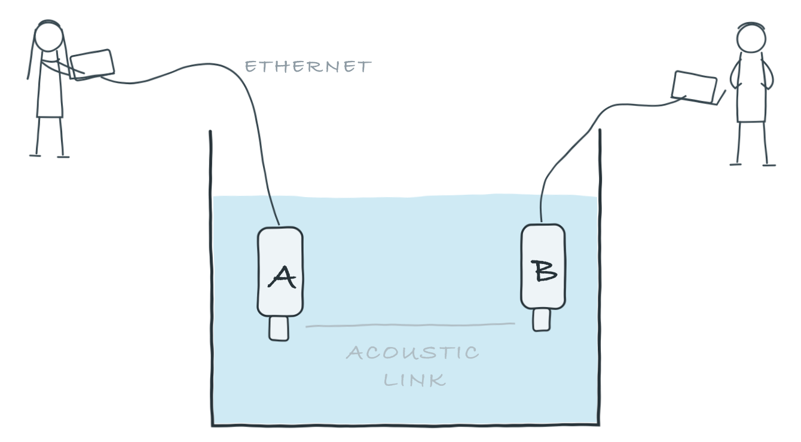

> tell 0, 'hello!'
OK2 Getting started
In this chapter, we will learn how to get UnetStack-compatible acoustic modems to communicate with each other. If you already own a couple of such modems, you can certainly use them to follow along. However, we will use a simulated 2-node underwater network to get going, since all you need for this is a computer and the Unet simulator.
2.1 Setting up a simulated network
Download UnetStack community edition for your OS and untar/unzip it. Open a terminal window in the simulator’s root folder and start the simulator:
$ bin/unet samples/2-node-network.groovy
2-node network
--------------
Node A: tcp://localhost:1101, http://localhost:8081/
Node B: tcp://localhost:1102, http://localhost:8082/
CautionWindows paths
If you’re using Windows, you may need to use:
bin\unet samples\2-node-network.groovyOpen two web browser windows and key in the two HTTP URLs shown above in each browser. This should give you a command shell for node A and node B in the two browser windows.
2.2 Making your first transmission
On the command shell for node A, type:
and you should see the message on the command shell for node B:
[232]: hello!Address 0 is a broadcast address, so you did not need to explicitly know the address of node B to transmit a message to it. The [232] that you see on node B is the “from” address (of node A). The simulator automatically allocates addresses to each node. You can easily find out the addresses of both nodes (on either node):
> host('A')
232
> host('B')
31You can try sending a message back from node B to node A. On node B, type:
> tell 232, 'hello back!'
OKand you should see a [31]: hello back! on node A just after a short delay:
[31]: hello back!
TipHostname
You could have specified the hostname instead of the address when sending the message:
tell host('A'), 'hello back!'2.3 Propagation delay & ranging
In the simulation, nodes A and B are placed 1 km apart. Since the speed of sound in water is about 1500 m/s (exact sound speed depends on temperature, salinity and depth), the signals take about 0.7 s to travel between the simulated nodes. This explains the short delays you see between sending the message from one node and receiving it on the other. You can also make use of this time delay to measure the distance between the nodes!
On node A, type:
> range host('B')
1003.0697We got an estimate of 1003 m for the range between the nodes.
2.4 Sending & receiving data
In Section 2.2, we transmitted a text message between nodes, and the result was simply displayed on the shell. Often, we are interested in transmitting arbitrary data (usually represented as an array of bytes). We may also have metadata associated with the transmission to control how the data is delivered. Let’s look at some examples to understand better.
UnetStack works with parcels of data called datagrams. To transmit a datagram from the shell, we can use a shell command dtx. On node A, type:
> dtx 0, [1,2,3,4,5]
AGREE
caddy >> DatagramTransmissionNtf:INFORM[id:019f4235-f922-784b-f181-c293257f2508 to:0]The dtx 0, [1,2,3,4,5] command requested UnetStack to transmit bytes [1,2,3,4,5] to node address 0 (broadcast address). The AGREE response told us that UnetStack agreed to do it, and the DatagramTransmissionNtf shortly after told us that the datagram was transmitted.
On node B, we should see the received datagram from node 232:
phy >> RxFrameNtf:INFORM[type:CONTROL from:232 rxStartTime:3594528707 rssi:-72.6 (5 bytes)]
0102030405We can attach metadata to the request. For example, we can request a reliable datagram transfer (requiring the receiver to acknowledge receipt of the data) from node A:
> dtx 31, [1,2,3,4,5], reliability: true
AGREE
caddy >> DatagramDeliveryNtf:INFORM[id:019f4236-00a8-7da7-9b47-b374fc893fd9]Note that reliability requires us to specify the destination address (in this case 31). Broadcast datagrams cannot be reliable, since the destination is unknown (with potentially multiple recipients). The DatagramDeliveryNtf tells us that the datagram was successfully delivered.
On node B, we should have received it:
uwlink >> DatagramNtf:INFORM[from:232 to:31 (5 bytes)]
0102030405
Tip
Don’t worry about the difference between a RxFrameNtf and DatagramNtf for now. RxFrameNtf is simply a subclass of DatagramNtf that is used when the data to be delivered is small and does not require acknowledgements or routing.
Had we transmitted to a non-existent node (say node 32), we would have gotten a DatagramFailureNtf after a delivery timeout (you may need to wait for 15 seconds or so for the timeout):
> dtx 32, [1,2,3,4,5], reliability: true
AGREE
caddy >> DatagramFailureNtf:INFORM[id:019a01ac-4ad4-7074-a93c-b4d04e4a7bc0]2.5 Interfacing with applications
We saw how to send and receive user data from the UnetStack shell. But often, we want to send/receive data from a user application. The application may be a Groovy script running on the modem, or an application running on an external device (such as a laptop connected to the modem). Such applications can interact with UnetStack to send and receive data using a simple UnetSocket API (available in Java, Groovy, Python, Julia, JavaScript and C).
2.5.1 UnetSocket API
While you could call the UnetSocket API from your application, we will first illustrate its use by using it directly from the UnetStack shell. In the next section, we will look at examples of using UnetSocket from a simple Python application.
2.5.1.1 Sending data
On node A, let’s create a UnetSocket and send some data using it:
> s = new UnetSocket(this);
> s.send('hello'.bytes, 31)
trueHere, we opened a UnetSocket to the modem hosting the UnetStack shell, and asked it to send the bytes representing the string 'hello' to node 31.
NoteWhy the trailing semicolon?
The shell prints the return value of every statement you type. A trailing ; suppresses that — without it, the first line above would print the socket object’s details, cluttering the transcript. You will see this idiom throughout the handbook whenever a statement’s return value is uninteresting.
TipConnecting remotely from an application
While we demonstrate the use of the UnetSocket API in Groovy on the command shell, the same commands work in a Groovy or a Java application, with one minor modification. Instead of opening the UnetSocket with this as the argument, we have to specify the IP address of the modem and the API port:
s = new UnetSocket('localhost', 1101)When the simulator was started, the IP address and API port was displayed (tcp://localhost:1101 for node A, and tcp://localhost:1102 for node B). In case of a real modem, you would specify the IP address of the modem and port 1100 (default API port exposed by UnetStack modems).
On node B, we would see a notification of incoming data with the 5 bytes representing the transmitted string in ASCII:
phy >> RxFrameNtf:INFORM[type:CONTROL from:232 to:31 rxStartTime:3602228707 rssi:-72.6 (5 bytes)]
68656c6c6fWe could convert the bytes from the last received notification (ntf) into a string:
> new String(ntf.data)
helloWe can add metadata to the datagram by setting some socket properties. For example:
> s.mimeType = 'text/plain';
> s.reliability = true;
> s.priority = Priority.HIGH;
> s.send('hello'.bytes, 31)sends the datagram with MIME type text/plain with HIGH priority and reliability. The send() only returns after the datagram is successfully delivered (or fails). On node B, we see:
caddy >> RemoteMessageNtf:INFORM[from:232 to:31 mimeType:text/plain (5 bytes)]
68656c6c6fThe datagram was delivered with the metadata that the MIME type is text/plain. Had we used a MIME type of application/x-chat, the data would have been delivered as a text chat message. On node A, typing:
> s.mimeType = 'application/x-chat';
true
> s.send('hello'.bytes, 31)results in node B seeing the chat message:
[232]: hello2.5.1.2 Receiving data
So far, we have seen how to transmit data, and we saw the received data printed on the UnetStack shell. In practice, we would want our application to receive data through a UnetSocket as well. On node B, let us disable displaying of received datagrams and we will explicitly listen for received data using a UnetSocket:
> dshow off
> s = new UnetSocket(this);Now, if we transmit a datagram from node A:
> s.mimeType = null // reset MIME type
> s.send('hello'.bytes, 31)we will see it received on node B:
> rx = s.receive()We can inspect it further using the variable rx that we stored it in:
> rx.data
> rx.from
> rx.toBy default, the receive() call blocks until data is received. We can make it non-blocking or block only until a timeout by calling s.setTimeout(...) to change the behavior.
There is a lot more we can do with the UnetSocket API, and we will cover it in detail in Chapter 9.
2.5.2 UnetSocket API from Python
UnetStack provides API bindings for many languages (Java, Groovy, Python, Julia, C, JavaScript, etc.). We demonstrate the use of the Python API here, but the usage is quite similar in other languages.
We’ll assume you have Python 3.x already installed. Let us start by installing the UnetStack Python API bindings:
$ pip install unetpyWe now write tx.py and rx.py scripts to transmit and receive a datagram respectively. We assume that the two-node network from the previous section is still running, with nodes A and B available on localhost API ports 1101 and 1102 respectively.
tx.py:
from unetpy import UnetSocket
s = UnetSocket('localhost', 1101)
s.send('hello!', 0)
s.close()rx.py:
from unetpy import UnetSocket
s = UnetSocket('localhost', 1102)
rx = s.receive()
print('from node', rx.from_, ':', bytearray(rx.data).decode())
s.close()
NoteA Python quirk!
In Python from is a keyword and cannot be used as a field name. We therefore use from_ for the source node address.
We first run python rx.py to start reception. Then, on a separate terminal window, we run python tx.py to initiate transmission. We should see the received datagram printed by the rx.py script:
$ python rx.py
from node 232 : hello!2.6 Working with acoustic modems
So far, we have worked with a simulator. While the experience is similar, it is not exactly the same. There is no real substitute for working with real modems. If you happen to have two UnetStack-compatible acoustic modems, you can use them to set up a simple 2-node network. Put them in a water body (tank, bucket, lake, sea, …), power them on, and connect each to a computer over Ethernet. The setup would look something like this:

On each computer, open a web browser and key in the IP address of the respective modem and click on “Shell”. This should give us a command shell for node A and node B on the two computers.
Tip
If you only have one computer available, you can connect both modems to the same Ethernet switch and connect to each modem’s IP address in separate browser windows.
When working with modems, you may need to adjust the transmit power level to a suitable level for use in the water body that you have the modems in. Too high or too low a power level will not allow the modems to communicate well. The modem transmit power can be adjusted using the plvl command. Type help plvl on the command shell for node A to see examples of how the command is used:
> help plvl
plvl - get/set TX power level for all PHY channel types
Examples:
plvl // get all power levels
plvl -10 // set all power to -10 dB
plvl(-10) // alternative syntax
plvl = -10 // alternative syntax
TipThe
help command
The help command is your friend! Just type help to see a list of help topics. Type help followed by a command name, topic or parameter (you’ll learn more about these later) to get help information on that topic.
Assuming you have the modems in a bucket, you’ll need a fairly low transmit power. On node A, let us set the transmit power to -50 dB and try a transmission:
> plvl -50
OK
> tell 0, 'hello!'
OK
TipPower level settings
Most UnetStack modems use plvl values in dB, relative to the maximum power level that the modem can transmit at. The maximum power level is therefore plvl 0. A setting of plvl -50 asks the modem to transmit at a power level 50 dB lower than the maximum.
If all goes well, you should see the message on node B:
[232]: hello!Of course, you’ll see a different “from” address than the one shown in the example here. It will be the actual address of your modem A. In case you don’t see the message on node B after a few seconds, you may want to adjust the power level up or down and try again.
All the other examples shown earlier in this chapter will also work with the modems. You’ll just need to replace the localhost with the appropriate modem IP address, and the API port for the modem will usually be 1100.
2.7 Transmitting & recording acoustic waveforms
So far, we have transmitted and received datagrams — UnetStack took care of modulating the data into an acoustic signal at the transmitter, and demodulating it back into data at the receiver. Sometimes, however, we want full control over the acoustic signal itself: we may wish to transmit an arbitrary waveform (e.g. a tone or a chirp), or to record the raw acoustic signal arriving at the modem. UnetStack-compatible modems that provide the BASEBAND service let us do exactly this. The BASEBAND service is covered in detail in Chapter 27; here we just get a taste of it.
2.7.1 Transmitting a waveform
The bbtx command requests transmission of a baseband signal. For example, to transmit a 20 kHz continuous-wave (CW) tone lasting 0.5 s:
> bbtx cw(20000, 0.5)
AGREEThe cw(frequency, duration) helper generates the baseband samples for a tone, and bbtx transmits them. We can generate and transmit other signals (chirps, modulated waveforms, etc.) in the same way. The signal must be within the frequency band supported by your modem.
TipPassband signals
On a real modem, adding 0 as a third argument (a carrier frequency of zero) makes cw() generate real passband samples instead, at the modem’s DAC rate. Passband signals are transmitted with the pbtx command:
> pbtx cw(20000, 0.5, 0)(The simulated modem has no DAC, so this works only against real hardware. More on baseband and passband signals in Chapter 27.)
Before generating signals, it is useful to know the modem’s baseband parameters — the carrier frequency and the baseband sampling rate:
> bb.carrierFrequency
24000.0
> bb.basebandRate
24000.0Baseband signals are represented as floating-point arrays with alternating real and imaginary (in-phase and quadrature) components in Java/Groovy, or as complex number arrays in Python/Julia.
NoteWhy complex baseband?
An underwater acoustic signal typically occupies a narrow band around its carrier — a few kHz of bandwidth around a carrier of tens of kHz. Sampling the signal directly (at passband) would require a sampling rate of more than twice the highest frequency present. Shifting it down by the carrier frequency to a complex baseband representation lets us sample at just the bandwidth of the signal (Nyquist), needing far fewer samples to represent exactly the same information. This is why modems work with complex baseband signals by default, and why the baseband sampling rate (bb.basebandRate) is much lower than the DAC/ADC rate.
2.7.2 Recording a waveform
The bbrec command records baseband samples from the modem. To record 12000 baseband samples (0.5 s at 24 kSa/s):
> bbrec 12000
AGREE
phy >> RxBasebandSignalNtf:INFORM[rxStartTime:2136430021 fc:24000.0 fs:24000.0 (12000 baseband samples)]The RxBasebandSignalNtf carries the recorded signal. We can inspect the first few samples via the last received notification (ntf):
> ntf.signal[0..7]
[-0.12953468, 0.08012757, 0.2922955, -0.97627044, 0.16984974, 0.92044944, 0.1269546, -0.9057404]The recorded values represent whatever acoustic signal the modem’s hydrophone picked up.
TipBehind the shell commands
The bbtx and bbrec commands are convenient shortcuts. Under the hood, they send TxBasebandSignalReq and RecordBasebandSignalReq messages to the bb agent, which provides the BASEBAND service. In simulation a single agent provides both the BASEBAND and PHYSICAL services, which is why the recording above is reported as phy >> even though the request went to bb. From an application or agent, you can send these messages directly (e.g. via the UnetSocket gateway from a Python or Julia program) to transmit and record arbitrary waveforms programmatically. See Chapter 27 for details.
When you are done experimenting, you can stop the simulation with Ctrl-C in the terminal running it, or by typing shutdown in any node’s shell (Chapter 30).